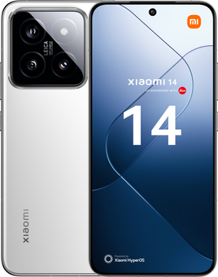
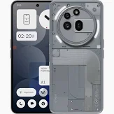
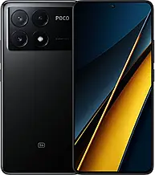

Топ Флагманів

Xiaomi 14 — флагманський смартфон з процесором Snapdragon 8 Gen 3, 6,36-дюймовим AMOLED дисплеєм з частотою 120 Гц та камерами Leica (50 МП). Має акумулятор на 4610 мА·год з швидкою зарядкою 90 Вт, що дозволяє зарядити пристрій до 100% за 31 хвилину. Працює на Android 14 з HyperOS. Підтримує 5G, але має обмежену підтримку деяких LTE-діапазонів у Європі. Ціна починається від 999 євро.

Nothing Phone 3a — смартфон з процесором Snapdragon 7s Gen 3, 6,72" AMOLED екраном, 50 МП основною камерою та 5000 мА·год батареєю. Підтримує швидку зарядку 50 Вт, має стильний дизайн з підсвіткою Glyph Interface. Ціна від €329.
.webp)
Samsung Galaxy Z Fold6 — преміальний складаний смартфон з 7.6" AMOLED-дисплеєм (120 Гц) всередині та 6.2" зовні. Працює на Snapdragon 8 Gen 3, має 12 ГБ ОЗП та до 1 ТБ пам’яті. Камера: 50 МП основна, 10 МП телефото (3×), 12 МП ультраширока; фронтальна — 4 МП під дисплеєм. Батарея — 4400 мА·г, швидка зарядка 25 Вт. Захист IP48, ОС — Android 14 (оновлення до 7 років).
.webp)
Google Pixel 9 Pro — флагманський смартфон від Google з 6.3" OLED-дисплеєм (120 Гц), процесором Tensor G4 і 16 ГБ оперативної пам’яті. Має потрійну камеру: 50 МП основна, 48 МП телефото (5×), 48 МП ультраширококутна. Фронтальна камера — 42 МП. Оснащений батареєю на 4700 мА·г з швидкою зарядкою 27 Вт, захист IP68, Android 14 з 7 роками оновлень.

Poco X6 Pro 5G — смартфон середнього класу з 6.67" AMOLED-дисплеєм (120 Гц), процесором Dimensity 8300-Ultra та 8/12 ГБ ОЗП. Має потрійну камеру: 64 МП основна, 8 МП ультраширококутна, 2 МП макро. Фронтальна камера — 16 МП. Оснащений батареєю 5000 мА·г з зарядкою 67 Вт, захистом IP54, Android 14 з HyperOS.